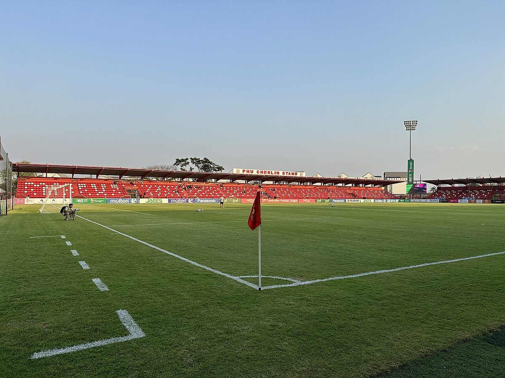
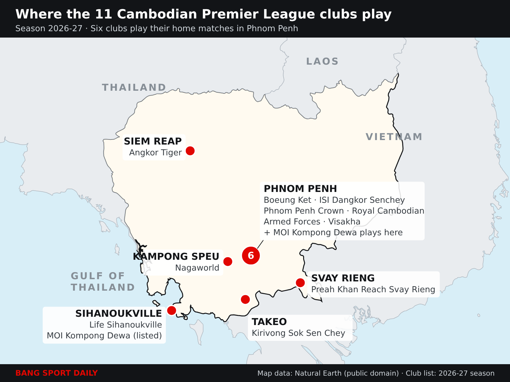
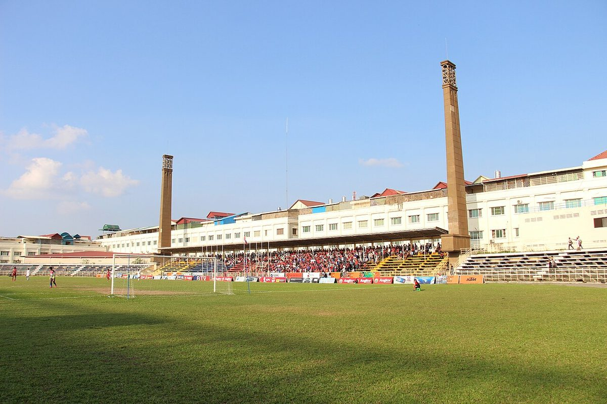

柬埔寨足球超级联赛：俱乐部更强，看台却空。逐队分析如何培养球迷
柬埔寨俱乐部在亚洲赛场取得胜利，联赛场均观众却只有约1300人。11家俱乐部的数据、吴哥猛虎在暹粒的崛起，以及日本和泰国的经验，显示了每家俱乐部可以做什么。

一个正在进步的联赛
自2022年柬埔寨足球联赛公司将原C联赛更名为柬埔寨足球超级联赛（柬超）以来，联赛发生了很大变化。柬埔寨足协从2019赛季前开始要求各俱乐部必须拥有可使用的主场。2026-27赛季共有11支球队参赛，每队可注册六名外援。
最明显的进步出现在亚洲赛场。斯外列皇家军打进了2024-25赛季亚足联挑战联赛决赛。据亚足联报道，在2026-27赛季亚冠联赛二级赛中，金边皇冠赢下前三场小组赛，其中包括10月15日客场2比1战胜韩国江原FC。斯外列11月5日以2比0击败新加坡淡滨尼流浪，积分达到7分。柬埔寨在亚足联俱乐部赛事排名中已从第30位升至第23位。
转播方式也有变化。据联赛介绍，从2026年7月起，所有比赛都可以通过联赛的CPL+应用观看，单场1000瑞尔（0.25美元），整季10万瑞尔（25美元）。BTV仍是电视转播方。

问题在看台
观众并没有随之增加。根据近几个赛季的观众记录，柬超场均观众在2024-25赛季为1243人，2025-26赛季为1291人。最少的一场在2024-25赛季只有101人，2025-26赛季为160人，都在基里翁索森柴的主场。联赛公布的2025-26赛季第16轮全轮观众总数为6507人。
邻国联赛的观众要多得多。2025-26赛季，马来西亚超级联赛场均3931人，泰国甲级联赛5202人，印尼超级联赛6372人。仅泰国武里南联一家俱乐部的主场场均观众就达18203人。
大日子证明需求存在
只要比赛像一场盛事，柬埔寨人就会来。2025年5月10日，斯外列与土库曼斯坦阿尔卡达格队的2025年亚足联挑战联赛决赛在德佐国家体育场吸引了51610名观众。据《金边邮报》报道，赛前几天门票就已售出超过5.3万张。而同一赛季的联赛场均观众只有1243人。
2025年12月27日汶格特对斯外列的比赛吸引了20005人，是2025-26赛季联赛观众最多的一场。据柬超介绍，2026年Krud柬埔寨超级杯吸引了12891名观众，比上一届的7614人增加了69%，当届比赛增加了柬埔寨歌手的中场演出以及球衣和足球赠送活动。
这些夜晚与普通周末之间的差距表明，问题不在于人们对足球没有兴趣，而在于普通联赛比赛的呈现方式。
柬埔寨的成功案例：吴哥猛虎
在几乎从零开始培养球迷方面，最好的本土例子在暹粒。日本商人加藤明拓于2015年收购了这家当时名为“柬埔寨猛虎”的俱乐部，并于2017年将其从金边迁到暹粒。
加藤在2019年讲述这段经历时写道，他接手时每场比赛只有约200名观众，大多是球员和工作人员的家人朋友，俱乐部在暹粒几乎无人知晓。他写道，到2019年，俱乐部的上座人数已是联赛平均水平的五到六倍，连续两年获得联赛上座率最高俱乐部奖，还形成了名为“猛虎军团”（Tiger Army）的球迷组织。俱乐部还在2018年柬埔寨足球颁奖礼上获评最受欢迎俱乐部。
俱乐部持续投资比赛日体验。它与Wonderpass合作，打造了《高棉时报》所称的柬埔寨首个“数字体育场”，并于2024年11月启用了自己的加藤明拓体育场，《高棉时报》称其为联赛中新的球迷最爱球场。据Kiripost报道，加藤希望把俱乐部打造成暹粒的旅游和娱乐中心。赛场上，吴哥猛虎在2025-26赛季获得第三名，打进71球。
吴哥猛虎证明，在柬埔寨有三件事行之有效：俱乐部属于一个附近没有对手的省份，球场大小与观众规模匹配，老板把比赛日当作一种产品来经营。
数据揭示的五个痛点
1. 俱乐部没有“家乡”。 多家俱乐部以公司或机构而非地名命名。内政部Kompong Dewa登记在西哈努克城，却在金边的维萨卡体育场比赛，并与维萨卡队共用该球场。球迷需要归属感，而城市或省份是最常见的归属。
2. 一座城市俱乐部太多。 11家俱乐部中有5家位于金边，还有一家在金边踢主场，它们争夺的是同一批球迷。

3. 球场大小不合适。 大型比赛在拥有数万座位的国家体育场举行，2000名观众在那里显得空荡荡；另一些俱乐部的球场又非常小，基里翁索森柴体育场只有250个座位。
4. 没有公开的分俱乐部数据。 联赛公布每轮总数，但不公布各俱乐部的场均观众、门票销售或应用观看人数，俱乐部无法衡量哪些做法有效。
5. 商业基础薄弱。 联赛没有冠名赞助商，合作伙伴为Molten、Metfone、Krud、Indomie和V-Active，冠军奖金为5万美元。俱乐部高度依赖老板，市场营销资金很少。
国外的成功做法
日本：数据和新观众。 据品牌金融（Brand Finance）报道，J联赛2024年观众人数达到创纪录的1250万人，比2023年增加14%。其“J.League ID”会员系统将球迷与俱乐部和球员联系起来。大阪钢巴利用这些数据对球迷进行分组并发送不同的邮件，并把重点转向家庭观众。女性球迷占30%至40%的鹿岛鹿角自2022年起举办“Dear Ladies”比赛日。联赛还在东京国立竞技场举办“国立日”比赛，用音乐和活动吸引平时很少看球的人。
泰国：一省一队。 据Main Stand报道，武里南联把拥有3.2万个座位的长竹球场打造成这个160万人口省份的头号景点。俱乐部自己生产球衣，在知名品牌球衣售价890至1900泰铢时，把价格保持在690泰铢，并在球场举办音乐会和节庆活动。2019年，它在一个比赛日的周边商品收入就达到2744万泰铢。
逐队分析：各俱乐部的现状
以下数据来自2026-27赛季俱乐部名单以及过去两个赛季的记录。各来源的球场容量不尽相同，本文采用2026-27赛季名单的数据。
斯外列皇家军（斯外列省，斯外列体育场，7002个座位；2023-24、2024-25、2025-26赛季冠军）。亚足联决赛的51610名观众证明俱乐部能吸引全国观众。下一步是把这种自豪感带回主场：在斯外列体育场定期举办活动，为本省学校和家庭提供门票，并推出奖励同时观看联赛和亚洲赛事球迷的会员卡。
金边皇冠（金边，金边皇冠体育场，4712个座位；联赛历史上最成功的俱乐部，2025-26赛季亚军）。自有球场和亚洲赛场的表现是它在首都最坚实的基础。借鉴J联赛的会员制度，把会员与门票和CPL+应用打通，可以把亚洲赛季的热度转化为整季的忠诚度。
汶格特（金边，国家奥林匹克体育场，3.5万个座位；2012年以来四夺联赛冠军，2025-26赛季第四）。对阵斯外列的20005名观众证明，只要比赛合适，俱乐部就能填满大看台。它可以像日本“国立日”那样，每季固定几场“大赛日”，围绕比赛安排娱乐活动；普通比赛则集中开放体育场中较小的区域，让看台显得满座。
维萨卡（金边，维萨卡体育场，6835个座位；2024-25赛季第三，2025-26赛季第七，2026年超级杯亚军）。维萨卡在2024-25赛季迎来联赛最高观众人数：对阵吴哥猛虎时有5438人。球场不到7000个座位，俱乐部可以把满座作为目标，并利用连胜时机发展会员、建立球迷看台。
吴哥猛虎（暹粒，加藤明拓体育场，3700个座位；2025-26赛季第三）。联赛的榜样。它的下一个机会是旅游：在东南亚最知名的旅游城市之一，通过酒店和旅行社销售球票和观赛套餐。
ISI当谷森柴（金边，Smart体育场，2980个座位；2025-26赛季第十一）。不到3000个座位的球场正适合营造满座的热烈气氛。在俱乐部众多的首都，它需要像日本俱乐部那样，通过本地学校和社区建立清晰的城区身份。
那迦世界（磅士卑省，磅士卑体育场，2350个座位；曾多次夺冠，最近一次在2018年，2025-26赛季第五）。俱乐部以磅士卑省为基地，但仍以赞助商名字为人所知。像吴哥猛虎围绕暹粒那样，围绕磅士卑建立身份，是吸引本地球迷最清晰的路径。
内政部Kompong Dewa（登记在西哈努克城，在金边维萨卡体育场比赛；2024-25赛季以8分垫底，2025-26赛季第六）。俱乐部在场上进步明显，但在登记所在的城市没有自己的主场。在开展任何球迷项目之前，固定的主场和本地化的名字是第一步。
柬埔寨皇家武装部队（金边，RCAF老体育场，7500个座位；2025-26赛季第九）。这支军队俱乐部天然拥有士兵、家属和周边社区这一群体。组织家庭日、儿童免费入场，可以把这个群体变成稳定的观众。

基里翁索森柴（茶胶省，基里翁索森柴体育场，250个座位；2025-26赛季第八）。俱乐部在两个赛季都录得联赛最低观众人数。作为茶胶省唯一的顶级联赛球队，它拥有武里南和吴哥猛虎成功依靠的“一省一队”地位。与学校、本地商家和省政府建立联系，推出平价的本地球衣，是低成本的第一步。
西哈努克城生命队（西哈努克城，生命体育场，2200个座位；2025-26赛季第十）。俱乐部由生命大学支持，可以把学生和教职员工作为现成的基础，推出学生票和校园活动。西哈努克城的游客是第二个受众群体。
人工智能和技术能帮什么
CPL+应用已经让联赛与每位观众建立了直接联系。结合简单、低成本的工具，它可以用来：
- 了解球迷。 像J.League ID那样把应用账户、购票和会员连接起来，就能知道谁在看、住在哪里、选择看哪些比赛。
- 精准触达。 像大阪钢巴那样，俱乐部可以向家庭、学生和只在手机上看球的球迷发送不同的优惠。
- 规划比赛日。 有了各俱乐部的观众、开球时间、天气和对手数据，简单的预测模型就能显示哪些时段观众最多。
- 用高棉语快速沟通。 人工智能工具可以在终场哨响几分钟内制作带高棉语字幕的精彩短片，并通过球迷常用应用上的聊天机器人回答购票和赛程问题。
- 衡量并公布。 每周公布各俱乐部的场均观众，可以让进步一目了然，也能为赞助商提供所需的数据。
下一步
2026-27赛季柬超将持续到2027年，金边皇冠和斯外列也将继续亚冠二级赛的小组赛。亚洲赛场的成绩和吴哥猛虎这样的例子显示了可能性。看台能否坐满，将取决于每家俱乐部每周的努力。